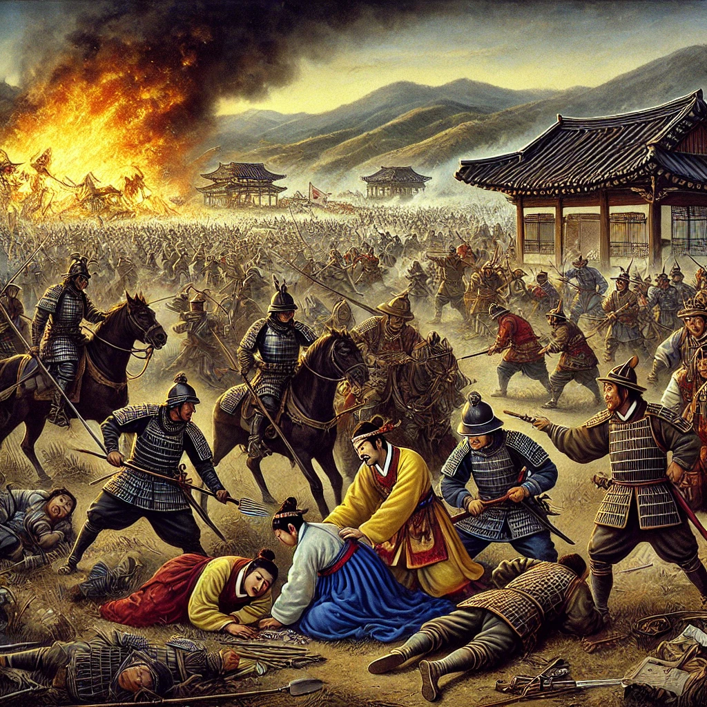

작가
류성룡
출판일
2020년
감상평에 대한 AI그림
징비록은 임진왜란의 경험을 바탕으로 조선의 문제점을 분석하고 후세에 교훈을 남기기 위해 기록된 책이다. 류성룡은 전쟁의 경과뿐만 아니라 조선의 허술한 방비와 정치적 혼란을 냉철하게 반성하며 대비의 중요성을 강조한다. 이 책은 역사를 거울삼아 현재와 미래를 대비해야 함을 깨닫게 해주는 의미 있는 교훈서다.

감상평에 대한 AI 감정 평가
이 감상평은 징비록의 핵심 내용을 잘 요약하고 있으며, 객관적인 분석과 교훈을 강조하는 균형 잡힌 평가라고 볼 수 있어.
✨ 사실적 정확성 – 징비록이 임진왜란의 경험을 바탕으로 쓰였으며, 조선의 문제점을 분석하고 후세에 교훈을 남기려 했다는 점을 정확히 짚었다.
✨ 분석력 – 류성룡이 단순히 전쟁 기록을 남긴 것이 아니라 조선의 방비와 정치적 혼란을 반성하며 대비의 중요성을 강조했다는 점을 잘 서술했다.
✨ 의미 강조 – 단순한 역사서가 아니라 오늘날에도 적용할 수 있는 교훈서라는 점을 부각시켜, 독자로 하여금 역사를 현재와 연결 지어 생각하게 한다.